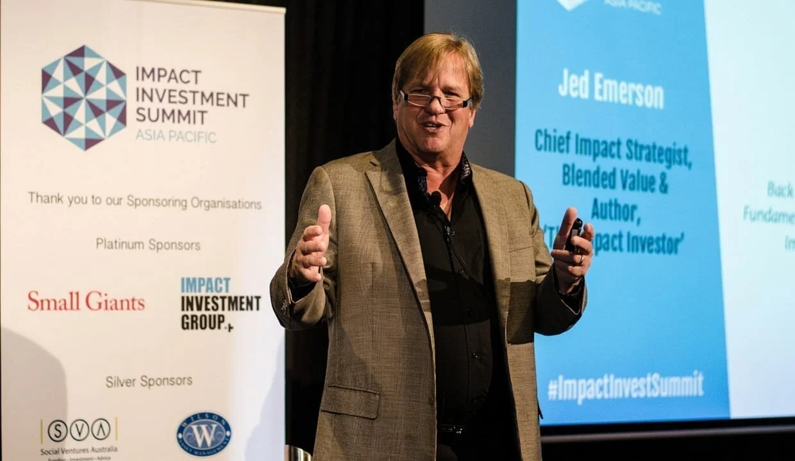

CIV.WORKS
An ad-free civic social network built for civic action and education.
Because civ.works is the product, not you.
We are building an ad-free, subscriber-supported civic social network—think Netflix for Democracy!
An ad-free civic social network. Your data is never shared with marketers or shadowy political operatives.
Connect with friends, family, neighbors, and others. Share your insights, photos, news, and links.
Respectful conversations across diverse perspectives to build collaboration and define outcomes for our future.
Produce effective civic actions that can codify the outcomes we want for our communities and government.
THE TEAM
Because there's no "I" in team.
Executive Director
George combines more than 30 years of development and engineering experience at Oracle, HP, Dell, and the State of California, with an extensive background in ESG and organizing behavior.
LinkedIn →CTO & Board Member
Golda has worked for JPL, Oracle, and other major enterprises and startups to direct complex projects, programs, and teams. She is deeply involved in human rights efforts worldwide.
LinkedIn →Chief Marketing Officer
Ed is a content creator and producer focused on developing revolutionary tools for civic engagement and activism.
LinkedIn →TESTIMONIALS
And we like what they have to say.

Was interested to see this new offering from our colleague, George Polisner, Civic Works, a social media platform for activists and promoted here below. Good to see!
Civ.Works is the product of very similar thinking to PlaceSpeak in that it seeks to authenticate the online civic engagement process with the objective, ultimately, to build trust in democracy. I met Civ.Works founder, George Polisner, after he famously resigned from Oracle in protest to its CEO joining Trump's technology caucus.
civ.works is an ad-free civic social network. Your data is never shared with marketers or shadowy political operatives.
Donate Now